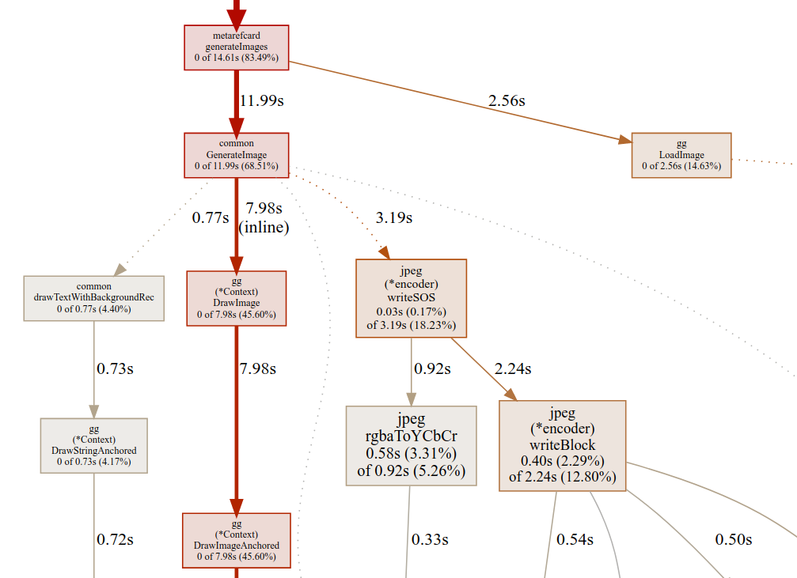

Hey Valentin, I've heard you're into Go and performance
would you have a look at my HOTAS image processing? Only if you can. Don't spend too much time on this.
Hi Ankur
What's HOTAS?
It's a flight simulator gaming thing. We generate card images on-the-fly, server-side
Oooh very cool. Sure, I'd be happy to help.
The repo is here
github.com/ankurkotwal/MetaRefCard
I'm worried about a memory leak
Also the image generation is kinda slow, which incurs a midly annoying user-facing latency
Ooh I see you've already written idiomatic tests and benchmarks! That's awesome,
it will make performance exploration much more straightforward 📈
I've run tests with
Pprof,
generated some call graphs... still not crystal clear for me
Before I deploy to Cloud Run, I need to check if the image generation is likely to
OOM
the regular instance available memory.
I could pay more to have several GB, however a memory leak would still crash the instance every few requests 🙄
OK, let's tackle this by 2 sides.
I'll read the code and try to reproduce the memory leak on my workstation.
Meanwhile could you deploy to Cloud Run (low memory), launch a few dozens requests, and see if you actually
experience any failures?
👌
So, I ran the tests with the -race flag, turns out there are some data races in the lazy init logic. I opened a PR.
It's a cultural thing in Go, if a program has data races, we pedantically regard it as broken 😂
We want to fix the races before improving anything else
in this case,
sync.Once
and
sync.Map
come to the rescue
Ah! Thanks, I'll merge it
When requests are processed sequentially, there doesn't seem to be any big memory usage.
E.g. this is using the
Trace viewer,
it never gets above 20MB
Correct. The problem occurs when requests are processed concurrently
which may happen often in production, as each request is taking several seconds to complete
Indeed when I launch a burst of 50 concurrent requests, I can see the memory usage
climbing to 750MB
You know, sometimes the Go runtime allocates large chunks of memory that you actually need and
doesn't give them back quickly to the OS, and that's mostly OK? This doesn't
always mean your code has any memory leak.
As long as you don't OOM, it's fine if your program is occupying more memory than
the amount your code's objects are actually using. It has some leeway. Maybe trust the GC? 🤷
I found this very suspicious at first, but okay I'll let the OS and the Go runtime
haggle over the memory heap, and hope for the best!
Also I haven't noticed any OOM in Cloud Run so far, this is going good 🤞
I had a look at the latency problem
You're drawing multiple text labels on the image in rectangles that don't
overlap, so I thought of doing that concurrently
Nah, I thought the same, unfortunately the Font objects are no thread-safe.
And we don't even need to try harder with more clunky synchronization patterns,
because the text drawing is actually not the bottleneck!
You're 100% right, we must focus on the actual bottlenecks, and "writing the
characters' pixels in the labels" is not one of them.
So, this is our CPU profile

18% of the total CPU time is spent encoding to JPEG.
Did you know the drop-in encoder replacement
github.com/pixiv/go-libjpeg/jpeg
? It can encode 5 times as fast, shaving 15% of the total time.